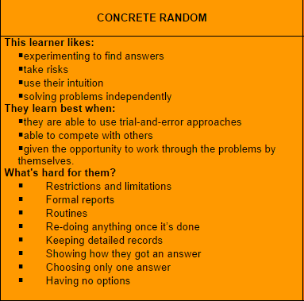

The Concrete Random Learner

Attempting to identify my learning style has put me to face my own creations, pay attention to the process, and remark with a short, but curious, "Hmm, interesting." And the list of qualities that I'm supposed to like? 1) experimenting to find answers. Yes. 2) take risks. Yes yes. 3) use their intuition. YEP. 4) solving problems independently HOW DO YOU KNOW ME LIKE THIS??
What does that mean for me in DBC? As much as I do enjoy creative, sand-box style independent problem solving, the real world won't let me have what I want! At least, not all the time. I need to focus on developing the qualities that I naturally will shy away from. I need to be able to deal with restrictions, solving problems with others, and sadly more restrictions. This means working with what I have, even if it means I have limited options and tools to find a solution. Being put in a confined space sounds scary, but it happens all the time. In terms of working on a commercial project, two closely related words heard all too often come to mind: time and money.
Being able work around restrictions, considering limited resources, or bearing with the drudgery of routine based menial work are all things I have dealt with and will continue to do so - in a different context. For some of these, I can draw on my previous experiences, though I completely expect to be faced with slightly different challenges as a programmer.
Right now, I face having to complete phase 0 work after work, so time as it applies to overall time management is a concern. In order to alleviate stress and allow myself to be even more productive, I've already employed a few techniques. Using the pomodori technique has been helpful in being mindful of my time as well as alotting times to take a short break. Meditation has allowed me to be more mindful of myself, how I feel, and how I deal with my feelings and emotions. I've become much more in tune with the inner workings of my mind and body, and I know this is only the start. Hey, this stuff is pretty cool!

As I face and recognize new challenges and possibilites for growth, I'll keep in mind that I can always find new techniques or get creative to address these issues. All I know is that the first step of improving is to admit to and recognize your weaknesses. The grecorc thinking style has helped me to put my strengths into a visible bucket where I can say, "You know what, I bet I'll need to improve x, y, and z". I've always identified well-roundedness as one of my strengths, so we'll see exactly how round I can get!